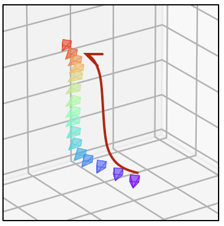
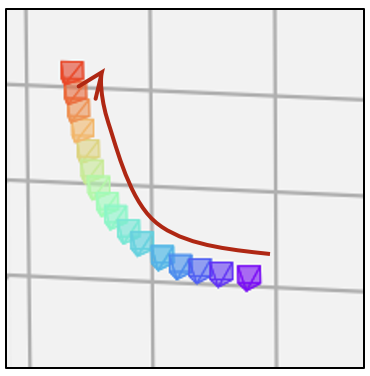
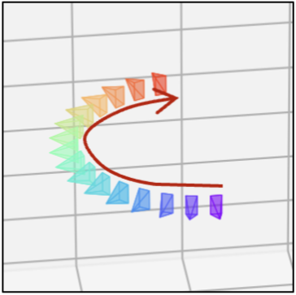
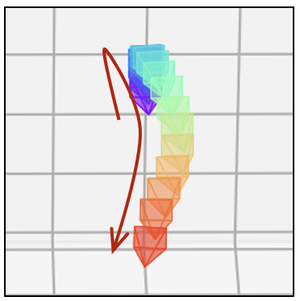

MotionShop: Zero-Shot Motion Transfer in Video Diffusion Models with Mixture of Score Guidance
Paper ID: #3361
Supplementary Material
Overview: One Motion Multiple Possibilities
Input
Original
Plane
"A vintage biplane in a serene beach, where waves crash against the shore"
Tiger
"A tiger leaping along a winding dirt path"
Car
"A futuristic hovering car with neon underglow"
Motorcycle
“A motorcycle driven by a robot, cruising through a desert”
Carriage
“A crystal carriage drawn by an ethereal horse in a fog”
Cart
“A wooden cart pulled by tiny, winged creatures”
Snail
"A whimsical giant snail with a spiral shell, making its way along a misty, enchanted forest"
Submarine
"A submarine gliding through a glass tube filled with water"
Input
Original
Owl
"A mechanical owl"
TV Robot
"A retro vintage TV robot"
Monkey
"A monkey"
Pig
"A pig"
TV Remote
"A person holding a TV remote"
Input
Original
Dolphin
"A dolphin leaping out of the water,"
Turtle
"A giant turtle with a miniature forest growing on its back"
Jetski
"A man riding a jetski"
Knight
"A medieval knight on horseback"
Hot Air Balloon
"A floating hot air balloon"
Input
Original
Miniatures
"A pair of miniature creatures"
Fairies
"Two playful fairies with delicate wings"
Input
Original
Motorcycle
"A sleek black motorcycle"
Samurai
"A legendary samurai"
Input
"Original"
Goat
"A mountaing goat standing on a ruffed cliffside"
Parrot
"A parrot perched on a branch"
Penguin
"A penguin on an iceberg"
Rabbit
"A rabbit exploring a magical garden"
Owl
"An owl in a snow-cowered landscape"
[Fig.1] Teaser
Single Object Motion Transfer
Input
Original Video
Motion Transfer
"A vintage biplane gliding low along a serene beach"
Complex Human Motion Transfer
Input
Original Video
Motion Transfer
"Woody from Toy Story"
Creative Camera Motion Transfer
Input
Original Video
Motion Transfer
"A coffee cup on a café table in a miniature cityscape"
Multiple Object Motion Transfer
Input
Original Video
Motion Transfer
"Three baby dragons crowded around glowing moonstone bowls"
[Fig.3] Qualitative Results
Single Object Motion Transfer
Input
Original Video
Motion Transfer 1
“A wooden cart pulled by tiny, winged creatures”
Motion Transfer 2
“A crystal carriage drawn by an ethereal horse in a fog”
Input
Original Video
Motion Transfer 1
"A medieval knight on horseback"
Motion Transfer 2
“A man riding a jetski”
Input
Original Video
Motion Transfer 1
“A pirate captain striding across the deck of a ship”
Motion Transfer 2
“A camel is crossing a road”
Multiple Object Motion Transfer
Input
Original Video
Motion Transfer 1
"Three juvenile unicorns sharing their first sip"
Motion Transfer 2
"Three young phoenixes at their morning ritual"
Input
Original Video
Motion Transfer 1
“A majestic eagle swooping to snatch a shiny gold coin”
Motion Transfer 2
“A medieval knight catches the magical artifact”
Input
Original Video
Motion Transfer 1
“A pair of miniature medieval knights”
Motion Transfer 2
"A duo of adorable robots”
[Fig.6] Camera Motion Transfer Results
Camera Trajectory

Pan-left with zoom-in trajectory
Input
Original camera movement sequence
Motion Transfer
"A steampunk clockwork butterfly"
Camera Trajectory

Dive and ascend trajectory
Input
Original camera movement sequence
Motion Transfer
"A golden snitch diving through Quidditch stadium"
Camera Trajectory

Circular motion trajectory
Input
Original camera movement sequence
Motion Transfer
"A medieval knight in gleaming armor"
Camera Trajectory

Zoom-out trajectory
Input
Original camera movement sequence
Motion Transfer
"Handwritten letter on pages"